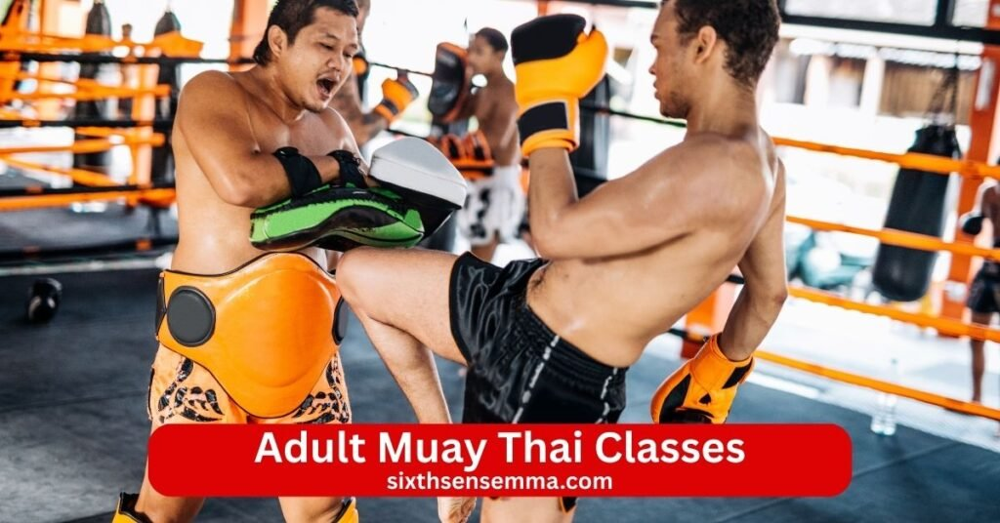
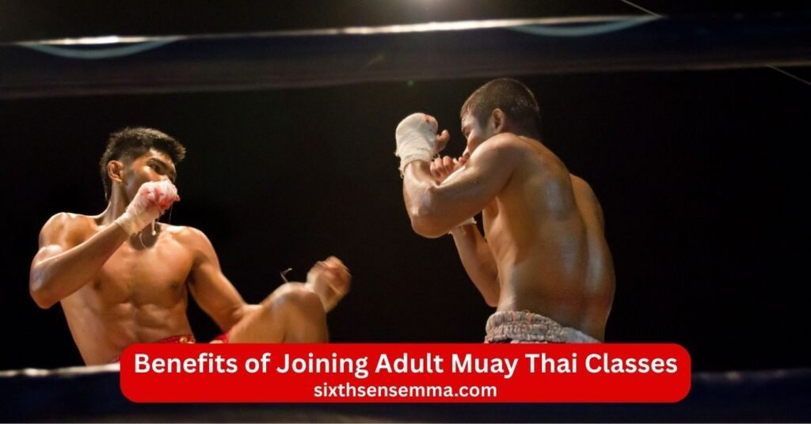
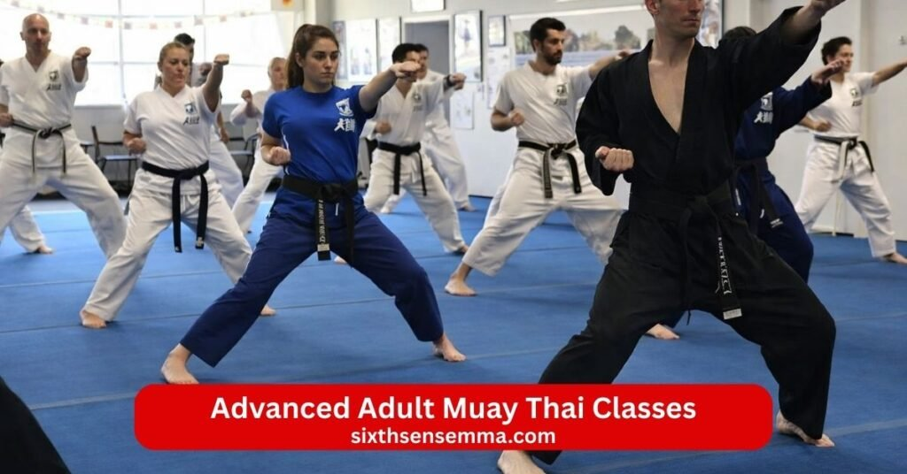

Adult Muay Thai Classes High Intensity Training for Fitness Strength & Self Defense

Adult Muay Thai Classes give adults a powerful full body workout that builds real strength speed endurance and practical self defense skills for daily life. At Sixth Sense MMA we offer Adult Muay Thai Classes that teach the complete art of muay thai with authentic punch kick knee elbow and clinch techniques from thailand. Beginner start from zero with simple clear steps while experienced students sharpen technique add power and prepare for controlled sparring or competition. Our muay thai instructor muay thai coach and trainer bring years of experience to every session blending traditional muay thai roots with modern training muay thai methods so you train safely and see real progress.
What You Will Learn in Adult Muay Thai Classes
Adult Muay Thai Classes teach real techniques from the art of muay thai that build strength power and practical self defense for everyday life. At the muay thai gym adult students join muay thai training sessions led by muay thai instructor muay thai coach and trainer who show clear technique step by step. The muay thai program mixes muay thai kickboxing muay thai kickboxing classes thai kickboxing classes kickboxing classes with mma mixed martial arts brazilian jiu jitsu jiu jitsu and combat elements so you become a well rounded practitioner and fighter.
Fundamental Strikes Punches Kicks Knees and Elbows
You start with the core of muay thai the fundamental strikes that use fists shins knees and elbows. Coach instructor and trainer teach proper punch from boxing style sharp kick with full hip turn powerful knee drives and close elbow slices. You learn stance footwork balance and how to generate force safely so every hit feels natural and strong. These moves make you a better athlete build strength and give real tools to protect yourself or defend against an attacker. Beginner feel the rhythm quickly while advanced students add speed power and smooth combos.
Pad Work and Heavy Bag Training
Pad work lets you hit real targets while instructor holds pads and calls combinations so you practice timing flow and power. You throw full strike improve accuracy and feel the rhythm of a real exchange. Heavy bag training builds raw strength endurance and snap in your hits as you work nonstop rounds. You condition shins improve guard position and keep moving with good footwork. This training raises your fitness full body power and workout intensity so you leave each session stronger sweatier and more capable.
Clinch Techniques and Close Range Control
Clinch techniques set muay thai apart and teach you to control an opponent up close. You learn to grab neck position body sweep throw knee strikes and stay balanced while limiting their movement. Trainer show safe ways to off balance push pull and dominate in tight spaces. This close range work sharpens instinct and focus when someone gets inside your range. You practice with partners to feel pressure safely so you gain confidence in handling combat situations that happen near the body.
Defensive Movements and Counter Attacks
Solid defense keeps you safe so you spend time on blocks checks slips and parries against punch kick knee and elbow. You learn to catch incoming strike cover openings and move away from danger quickly. Counter attacks follow right after you block or evade so you turn defense into offense fast and effective. Coach teach how to read opponents spot weaknesses and react smartly. This part builds calm thinking and helps you stay calm under pressure while you learn how to protect yourself in real moments.
Strength Conditioning and Endurance Training
Adult Muay Thai Classes include tough strength conditioning and endurance work that prepares your body for anything. You do circuits bodyweight exercises and high intensity rounds that build muscle power stamina and explosive speed. Training involves core legs arms grip and full body fitness so you last longer in session or real situations. You help you build lean muscle tone and better coordination while raising overall fitness. This training supports every technique strike clinch and movement so you feel stronger fitter and more ready as a fighter athlete and practitioner.

Benefits of Joining Adult Muay Thai Classes
Adult Muay Thai Classes bring changes that touch every part of your daily life from better body shape to stronger mind and real readiness for anything. At the muay thai gym adult students join muay thai training muay thai program muay thai class and muay thai kickboxing classes led by muay thai instructor muay thai coach and trainer who guide clear technique in a supportive environment. The practice of muay thai mixes muay thai kickboxing thai kickboxing classes kickboxing classes with mma mixed martial arts brazilian jiu jitsu jiu jitsu and combat so you become a well rounded practitioner athlete and fighter. Classes fit beginner to advance skill levels and help you focus build confidence discipline and dedication while you learn how to protect yourself and live with more energy.
Weight Loss and Muscle Toning
Adult Muay Thai Classes burn calories fast and shape your body through nonstop full body movement. You throw punch kick knee elbow and move constantly which works every muscle group and raises heart rate high. The workout builds lean muscle while melting fat so you see weight loss and clear muscle toning in legs core arms and back. Hard work in pad work heavy bag training and rounds helps you get fit and help you build a stronger firmer look without boring gym routines. Many students notice clothes fit better energy stays high and body changes show after consistent sessions.
Improved Cardiovascular Endurance
Muay thai training pushes cardiovascular endurance to new levels with high intensity rounds drill and constant action. You move strike breathe hard and recover quickly which strengthens heart lungs and stamina. Session after session you last longer in rounds feel less winded and handle daily tasks with more ease. The full body demands improve conditioning endurance and overall fitness level so you breathe better move smoother and recover faster. This kind of workout carries over to running stairs sports or just keeping up with life without getting tired quickly.
Increased Confidence and Mental Toughness
Adult Muay Thai Classes build deep confidence and mental toughness that show up outside the gym. You push through tough rounds face challenge head on and see yourself improve week by week which makes you trust your strength more. Coach instructor and trainer teach you to stay calm think clearly and keep going even when tired so you handle stress pressure or difficult moments better. The supportive environment cheers effort so you stand taller speak with certainty and face life with quiet assurance. This inner growth helps you focus stay steady and carry yourself with real confidence every day.
Practical Self Defense Skills
Muay thai stands out for practical self defense because it uses the whole body as a weapon in real situations. You learn to strike from distance control range with kick close gaps with knee finish with elbow and dominate in clinch. Trainer show blocks checks counters and ways to defend against an attacker so you create space escape or stop threats quickly. The moves come naturally after practice and work even against bigger stronger people through smart technique not raw power. You gain the ability to learn how to protect yourself feel safer and move through life with more peace of mind.
Stress Relief Through High Intensity Training
High intensity muay thai stance melt away daily stress like nothing else. You focus completely on the next combo breath and movement so worries fade during workout. Hitting pads bags or partners lets you release tension anger or frustration in a healthy controlled way. Endorphins from hard rounds leave you calm clear headed and positive afterward. Daily training gives a regular outlet to recharge mentally and physically so you sleep better think sharper and face problems with more patience. Many students say they leave class lighter and more balanced because the practice of muay thai clears the mind and builds discipline that lasts.
Adult Muay Thai Classes for Beginners
Adult Muay Thai Classes for beginners welcome anyone ready to start the art of muay thai without worry about past experience. At the muay thai gym adult students join muay thai training muay thai program muay thai class and muay thai kickboxing classes in a supportive environment that makes learning easy and enjoyable. Muay thai instructor muay thai coach and trainer guide every technique clearly so beginner build strength confidence discipline and focus from day one. The practice of muay thai mixes muay thai kickboxing thai kickboxing classes kickboxing classes with mma mixed martial arts brazilian jiu jitsu jiu jitsu and combat elements so you become a well rounded practitioner athlete and fighter. Classes fit your fitness level and pace while you learn how to protect yourself and enjoy the great workout that improves full body fitness conditioning endurance and coordination.
No Prior Martial Arts Experience Required
You do not need any background in martial art martial or any other sport to join Adult Muay Thai Classes for beginners. Beginner start right where they are with no pressure to know punch kick knee elbow or anything else before the first session. Coach instructor and trainer explain every basic move slowly and simply so you feel comfortable from the start. The program is designed to teach the art of muay thai training muay thai and muay thai kickboxing from zero with clear steps and patient guidance. Many adult students come with zero experience and still see quick progress in technique strength and confidence because the focus stays on learning safely and having fun.
Step by Step Skill Development
Adult Muay Thai Classes for beginners follow a clear step by step path so skills build naturally and stay solid. You begin with stance footwork balance and simple punch then add kick knee and elbow strikes one at a time. Trainer break each technique into small parts show proper form and let you practice slowly until it feels right. You move to combos timing and flow once basics lock in while pad work heavy bag training and partner drills reinforce everything. Advanced students later add speed power and more complex moves but beginners take their pace without rush. This steady approach helps you help you build clean skill coordination and the martial arts mindset that makes muay thai a way of life.
Personalized Coaching and Progress Tracking
Every beginner gets personal attention from muay thai instructor muay thai coach and trainer who watch your form give direct feedback and adjust drills to fit your body fitness level and goals. They track your progress week by week notice improvements in strength endurance coordination and confidence and celebrate every step forward. Personalized coaching means you fix small mistakes early avoid bad habits and move at the right speed for you. Instructor answer questions encourage you through tough moments and help you reach the next level when ready. This individual focus keeps you motivated makes training effective and turns hard work dedication and discipline into real results you can see and feel.

Advanced Adult Muay Thai Classes
Advanced Adult Muay Thai Classes push experienced students to sharpen every part of their game and reach higher levels of skill power and readiness. At the muay thai gym adult practitioners join intense muay thai training muay thai program muay thai class and muay thai kickboxing classes where muay thai instructor muay thai coach and trainer give focused technique work in a supportive environment. The practice of muay thai builds on strong basics from muay thai kickboxing thai kickboxing classes kickboxing classes with mma mixed martial arts brazilian jiu jitsu jiu jitsu and combat so you become a more complete well rounded practitioner athlete and fighter. Classes suit advance skill levels and demand hard work dedication and discipline to improve strength endurance coordination focus confidence and the ability to learn how to protect yourself at the highest level. You train with others who match your drive so every session challenges you to grow and compete like a true fighter.
Controlled Sparring Sessions
Controlled sparring sessions become the core of Advanced Adult Muay Thai Classes where you test skills under real pressure but stay safe and technical. You wear proper gear follow strict rules and keep contact light to moderate so focus stays on timing distance defense and clean strike. Coach instructor and trainer watch closely call out focus areas like clinch entries counter timing or specific knee elbow kick and stop rounds instantly if needed. Sparring helps you read opponents feel the rhythm of a fight and practice staying calm while moving with good guard and footwork. This controlled practice turns theory into instinct so you react faster think clearer and build the mental toughness needed for any combat situation.
Fight Preparation and Competition Training
Fight preparation and competition training take your skills from gym to ring or real challenges with structured camps and smart planning. Trainer build fight specific programs that include strategy sessions weight management camp conditioning and mock fights to mimic real rounds. You drill game plans counter common styles work on mental prep and practice peaking on fight day. Instructor break down footage from your own rounds or pro fights to spot weaknesses and strengths then adjust technique and tactics accordingly. Whether you aim to compete in amateur bouts or just fight train like a fighter this coaching pushes endurance strength coordination and focus while keeping safety first. Students who follow this path gain huge confidence sharper instinct and the satisfaction of seeing dedication pay off.
Performance and Technique Refinement
Performance and technique refinement focus on fine tuning every detail so you move smoother hit harder and stay more efficient. Coach assess your punch kick knee elbow clinch defense footwork and guard then create personalized plans to fix small flaws and polish strengths. You work extra drill on timing transitions speed power and flow with pad work heavy bag training and partner exercises. Advanced students refine subtle things like angle changes breathing rhythm and counter setups that make big differences in real exchanges. This refinement improves overall athlete level full body fitness conditioning and the ability to defend or attack with precision. Consistent work here turns good technique into elite level performance.
Why Sixth Sense MMA Are the Top Choice for Adult Muay Thai Classes
Sixth Sense MMA stands as the clear top choice for Adult Muay Thai Classes because we deliver strong results in a welcoming space right where people live and work. Our muay thai gym offers muay thai training muay thai program muay thai class and muay thai kickboxing classes with expert muay thai instructor muay thai coach and trainer who guide technique in a supportive environment. Adult students from nearby areas join to learn the art of muay thai training muay thai muay thai kickboxing alongside mma mixed martial arts brazilian jiu jitsu and combat so they become well rounded practitioner athlete and fighter. Classes fit beginner to advance skill levels and help build strength endurance coordination focus confidence discipline and dedication while you learn how to protect yourself and enjoy the great workout from this ancient sport with roots in thailand.
Convenient Location
Our gym sits in a prime spot at 817 S MacArthur Blvd Coppell Texas making Adult Muay Thai Classes easy to reach for busy adult students. Close to neighborhoods offices and main roads the location means short drives plenty of parking and no long trips that cut into your day. Adult from surrounding areas find it simple to attend after work or on weekends without hassle. This convenience helps you show up consistently train harder and see faster gains in full body fitness conditioning and technique. When the gym feels close and accessible people stick with muay thai training muay thai kickboxing and reach their next level without excuses.
Small Class Sizes for Individual Attention
We keep class sizes small so muay thai instructor muay thai coach and trainer give real personal guidance to every adult student. You never get lost in a big group or wait long for feedback. Instructor watch your punch kick knee elbow clinch and guard correct small errors right away and adjust drill to match your fitness level skill levels and goals. Small groups allow safe pad work heavy bag training controlled sparring and more time to ask questions or fix technique. Students progress quicker because attention stays focused on them. Many say this setup makes them feel valued pushes them harder and turns tough session into enjoyable challenges with clear improvement.
Proven Track Record of Student Success
Students at Sixth Sense MMA show real lasting results that prove our muay thai program works. Beginner often start unsure but soon hit harder last longer in rounds feel calmer in stress and carry confidence into daily life. Advance adult sharpen technique compete better or reach personal bests in power speed and endurance. Coach instructor and trainer track progress celebrate milestones and help overcome plateaus so everyone sees steady gains. People build strength mental toughness better focus and practical self defense that shows outside the gym. Reviews and stories from current adult students highlight improved fitness discipline dedication and the satisfaction of knowing they can defend themselves effectively. This consistent success draws new students who want the same transformation.
Positive and Respectful Training Culture
The training culture at Sixth Sense MMA feels positive respectful and encouraging from the first day. Supportive group members push each other share tips and celebrate wins without ego. Coach instructor and trainer create an environment where hard work gets respect everyone stays motivate and people connect over shared dedication. You sweat laugh and grow together in a space free of judgment. This respectful vibe makes Adult Muay Thai Classes something to look forward to not just a workout. Students form bonds find mentor in trainer and build lasting habits because the atmosphere lifts everyone up. It turns muay thai training muay thai kickboxing into more than exercise it becomes a way of life where you learn how to protect yourself and thrive.
Why Choose Sixth Sense MMA for Adult Muay Thai Classes
Sixth Sense MMA stands out as the best place for Adult Muay Thai Classes because we focus on real skill growth safety and a positive space that fits busy adult lives. Our muay thai gym offers muay thai training muay thai program muay thai class and muay thai kickboxing classes with expert muay thai instructor muay thai coach and trainer who guide technique clearly and patiently. Adult students join to learn the art of muay thai training muay thai muay thai kickboxing alongside mma mixed martial arts for kids brazilian jiu jitsu jiu jitsu and combat so they become well rounded practitioner athlete and fighter. Classes suit beginner to advance skill levels in a supportive environment where hard work dedication and discipline help you focus build confidence strength endurance coordination and the ability to learn how to protect yourself while enjoying the great workout from this powerful sport rooted in thailand.
Certified and Experienced Muay Thai Instructors
Our certified and experienced muay thai instructors bring deep knowledge from years of training teaching and real practice so you get accurate technique every time. Muay thai coach trainer and instructor stay updated with modern methods while keeping the traditional roots of muay thai alive. They know how to break down punch kick knee elbow clinch and guard for beginner while pushing advanced students with smart adjustments and feedback. Instructor give personal guidance spot small errors fix them fast and help you progress whether you want fitness self defense or to compete. This level of expertise makes learning effective and trustworthy so you build solid skills with real confidence.
Beginner Friendly and Advanced Level Programs
Adult Muay Thai Classes at Sixth Sense MMA fit both beginner and advanced students perfectly so no one feels out of place. Beginner start with simple stance footwork balance and basic strike explained slowly with lots of encouragement and clear demos. Advanced students move into tougher drill controlled sparring strategy and competition prep that sharpen timing power and flow. Coach instructor and trainer adjust every session to match your fitness level skill levels and goals so beginner feel supported and advance ones stay challenged. You progress at your own pace with personalized coaching that keeps technique clean and results steady. This smart setup helps every adult learn how to protect themselves improve full body fitness and reach their next level without frustration.
Safe Clean and Fully Equipped Training Facility
Our training facility stays safe clean and fully equipped so adult students train with peace of mind. Mats get deep cleaned daily equipment stays in top shape and the space has good air flow lighting and plenty of room to move. You use high quality pad work heavy bags thai pads shin guards gloves and all the gear needed for muay thai muay thai kickboxing and combat drills. Instructor enforce strict safety rules controlled sparring proper warm ups and constant supervision to prevent injuries. The gym feels open professional and welcoming with viewing areas for friends or family. This clean equipped setup lets you focus fully on workout strength conditioning and technique while feeling secure every session.
Supportive and Motivating Training Environment
The training culture at Sixth Sense MMA feels supportive motivating and respectful from the first day. Adult students push each other share tips cheer effort and celebrate progress without ego. Coach instructor and trainer create an environment where hard work gets respect everyone stays motivate and people connect over shared dedication. You sweat laugh and grow together in a space free of judgment. This positive vibe makes Adult Muay Thai Classes something you look forward to not just a workout. Students form bonds find mentor in trainer and build lasting habits because the atmosphere lifts everyone up. It turns muay thai training muay thai kickboxing into more than exercise it becomes a way of life where you help you build confidence discipline strength and the ability to compete or defend with real skill.
Contact US
If you are interested in Adult Muay Thai Classes at Sixth Sense MMA want to check class schedules book a trial session ask about pricing or membership or get more information on muay thai training muay thai program muay thai class muay thai kickboxing classes muay thai kickboxing or anything related to muay thai reach out anytime. Our team is here to help adult students from beginner to advance find the right fit so you can start training muay thai learn the art of muay thai and build strength endurance coordination focus confidence discipline and dedication in a supportive gym.
- 817 S MacArthur Blvd #100 Coppell TX 75019 United States
- (469) 972 7800
- info@sixthsensemma.com
Conclusion
Adult Muay Thai Classes at Sixth Sense MMA deliver more than a workout they create real strength sharper skills and lasting changes that carry into every part of your life. From your first session you step into a clean supportive muay thai gym where muay thai instructor muay thai coach and trainer guide the art of muay thai with clear technique and patient dedication. Adult students of all fitness level and skill levels learn authentic punch kick knee elbow clinch defense and counter attacks through muay thai training muay thai program muay thai class muay thai kickboxing classes and muay thai kickboxing in a way that fits beginner to advance.
Follow Us on Social Media
Stay connected with Sixth Sense MMA through our social media channels. Follow us for class updates, training tips, and a closer look at our self defense community.
FAQ’s
Yes you can learn Muay Thai as an adult at any stage of life. Many people start in their 20s 30s 40s or even later and still reach high levels of skill, fitness and confidence. Muay Thai focuses on technique timing and conditioning more than raw athleticism so adults often excel because they bring patience, discipline and better body awareness than most kids. Good gyms have beginner friendly classes that start slow with proper form and build gradually. Adults usually progress steadily with consistent training and see benefits like improved strength endurance coordination and stress relief. Age brings advantages in focus and work ethic so starting as an adult is completely realistic and often very successful.
No, 40 is not too old to start Muay Thai. Plenty of people begin in their 40s and go on to train for years enjoying great fitness gains self defense skills and mental toughness. At 40 your body can still adapt well especially with smart training that emphasizes technique mobility and recovery instead of max power or heavy contact early on. Choose a gym with experienced instructors who modify drills for older beginners, use lighter sparring and focus on health benefits. Many 40 plus students report better joint health, balanced energy and confidence after training. Listen to your body warm up properly and progress at your own pace. 40 is actually a common and very achievable age to start.
No 34 is not too old for Muay Thai at all. In fact many fighters and enthusiasts start or get serious around their mid 30s and achieve strong results. Your 30s are still a prime time physically with good recovery strength and coordination potential. Adults at 34 often train smarter than younger beginners because they focus on technique efficiency and injury prevention. You can build excellent Muay Thai skills conditioning and practical self defense in a few years of consistent work. Most gyms welcome adults in their 30s and offer classes that suit working professionals with flexible schedules. Starting at 34 gives you plenty of time to reach high levels of proficiency and enjoy the full benefits of the sport.
No 25 is definitely not too late for Muay Thai. In fact 25 is still very young in martial arts terms and many professional fighters reach their peak in their late 20s or 30s. At 25 your body recovers quickly, builds strength fast and adapts well to the demands of Muay Thai training. You have decades ahead to develop high level skills, compete if you want or simply train for fitness, self defense and personal growth. Starting at 25 allows time to master fundamentals, progress to advanced techniques and even pursue amateur or pro fights if that interests you. Most gyms see 25 as an ideal age to begin seriously because you combine youth energy with adult focus and discipline.
Both jiu jitsu and Muay Thai are challenging but in different ways so which one feels harder depends on your body type personality and what you struggle with most. Muay Thai often feels harder physically at first because of constant high intensity movement, shin conditioning impact from kicks, knees and elbows and the need for explosive power and cardiovascular endurance. You take hits and deal with pain which tests toughness early. Jiu jitsu (especially brazilian jiu jitsu) feels harder mentally and on endurance because rolls can last long, you spend time in uncomfortable positions and you must solve problems under pressure while fatigued and being controlled. It demands grip strength, patience and technical precision. Many people find Muay Thai tougher on the body initially while jiu jitsu is tougher on the mind. Training both usually makes you better overall since they complement each other well.
There is no public evidence or confirmation that Barack Obama trained in any martial arts style. He has spoken about staying fit through basketball, running weights and general cardio but no records, interviews or photos show him practicing karate, taekwondo jiu jitsu, boxing Muay Thai or any formal martial art. Some images exist of him playfully shadowboxing or doing light moves with kids but these appear casual and not serious training. He never claimed martial arts experience during his presidency or in books. Any suggestions otherwise seem based on rumors jokes or speculation without solid backing.
Muay Thai rules ban several actions to keep fights safe and fair especially in professional or amateur bouts. Common prohibitions include no headbutts no eye gouges no biting no hair pulling no strikes to the groin no small joint manipulation no throws over the hip when both fighters are standing no elbow strikes to the back of the head no stomping on a downed opponent and no strikes to the spine or back of the neck. In most modern rulesets punches, kicks, knees and elbows are allowed but certain dirty tactics or dangerous moves get penalized or disqualified. Clinch work is permitted but some promotions limit certain throws or restrict elbows in amateur fights. Rules can vary slightly between organizations, stadiums or countries but the core bans focus on preventing serious injury.
Learning Muay Thai depends on your goals, consistency, training frequency and natural ability but basic competence usually takes 1 to 3 years. In the first 6 to 12 months most people master fundamentals, stance footwork, basic strikes clinch work and simple defense enough to hold their own in light sparring and feel confident. Intermediate level with good combinations timing and solid defense often takes 2 to 4 years of regular training 3 to 5 times a week. Advanced proficiency in high level sparring or amateur fighting typically requires 4 to 8 years or more of dedicated work. Becoming truly elite or professional can take 8 to 15 years. Progress feels faster early on then slows as skills deepen. Consistent hard training with good coaching speeds everything up.
Mike Tyson started boxing at age 12. He was introduced to the sport while in a juvenile detention center where counselor Bobby Stewart noticed his raw talent and aggression. Stewart began training him and later introduced him to legendary coach Cus D’Amato. Tyson moved in with D’Amato and trained seriously from that point turning pro at age 18 in 1985. His early start combined with intense coaching helped him become the youngest heavyweight champion in history at age 20.
Muay Thai has several downsides especially for people who train hard or compete. Frequent impact causes bruises, shin conditioning pain and joint wear especially knees, elbows and hands. Hard sparring or fights lead to cuts black eyes and occasional concussions. Training is very intense so overtraining fatigue or burnout happens if you push too much without rest. The high physical demands can strain the body long term leading to arthritis or chronic pain later in life. It takes significant time and commitment to improve which can be tough with work or family. Some gyms have ego or tough guy culture that feels unwelcoming. Injury risk exists especially without good coaching or protective gear. Recovery takes longer as you age so listening to your body becomes important.
Train with us in Coppell
The first class is free. Shorts, a t-shirt and a water bottle. We lend the rest.
Book a free class